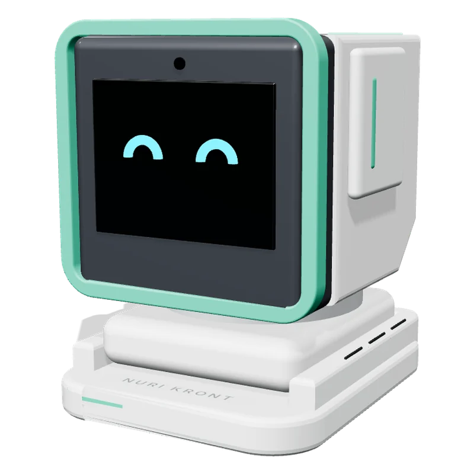
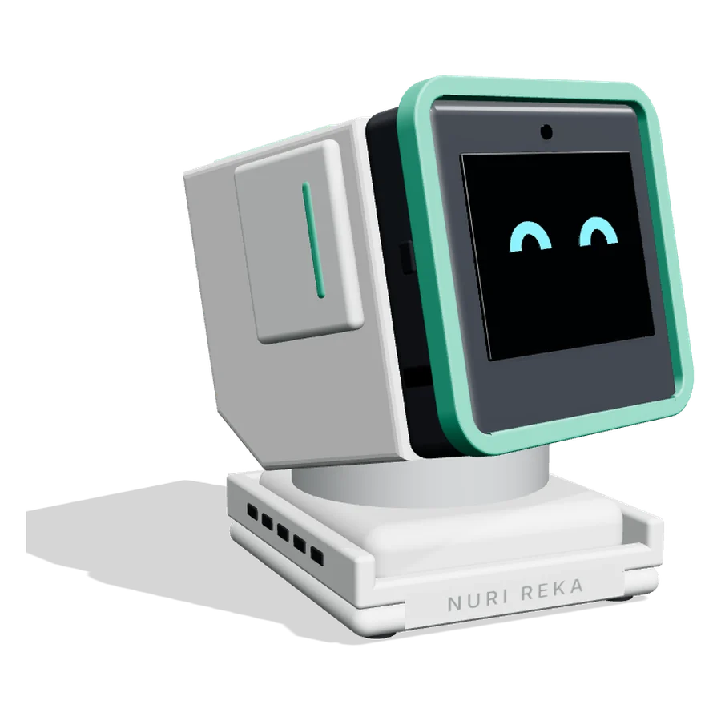

Kawan belajar yang sabar
Cuba tunjuk mana saya silap.
- Bagi petunjuk langkah demi langkah, bukan terus bagi jawapan
- Latihan bercakap dalam Bahasa Melayu, Inggeris, Mandarin dan Jepun
- Kuiz dan pemasa belajar
Teman AI kecil yang duduk di atas meja anda. Boleh teman anak buat kerja sekolah, sambut pelanggan di kaunter, ingatkan jadual harian dan tanya khabar orang tersayang. Dibina atas M5Stack StackChan K151, pakai sut pilihan anda, dan namanya diukir pada dock.

Perkakasan sebenar, dah terbuktiM5Stack StackChan K151 yang asli, lengkap dengan kamera, mikrofon, skrin sentuh dan kepala yang boleh bergerak dua arah.
Cas sambil gunaLetak saja atas dock. Palam USB-C pada dock terus masuk ke port pengecas K151.
Nama ikut suka andaSetiap dock diukir NURI dan nama teman anda. Percuma.
Ini bukan empat model atau empat pakej. Semua NURI guna perkakasan dan perisian yang sama, jadi satu NURI boleh buat semuanya dalam sehari. Tak ada apa-apa yang perlu dibuka kunci.
Cuba tunjuk mana saya silap.
Selamat datang! Nak tengok servis atau ambil nombor?
Hari ni apa yang paling penting?
Selamat pagi. Nak saya telefon anak?
Dan banyak lagi. Teman buat kerja sekolah, penyambut tetamu di kedai, pemasa belajar, tukang cerita sebelum tidur, kawan di meja. Apa yang NURI boleh buat, terpulang pada kreativiti anda.
Setiap kegunaan dibina sedikit demi sedikit dan ditanda Konsep selagi belum siap dan diuji. Kami cuma akan tawarkan ciri yang dah diuji.
Animasi konsep pendek, guna model 3D yang sama macam di laman ini, dengan suara yang dijana AI. Hidupkan bunyi untuk dengar NURI bercakap. Ini cuma gambaran cara NURI akan membantu; ciri-cirinya masih dalam pembangunan.
Beri NURI nama, suara dan gaya bercakap yang kena dengan jiwa anda. Lepas tu sambungkan dengan AI kegemaran anda, macam ChatGPT atau Claude. Perbualan yang anda dah biasa tu kini ada wajah di atas meja. Makin selalu berbual, makin NURI kenal anda.
Konsep · ciri yang dirancangChatGPT ialah produk OpenAI dan Claude ialah produk Anthropic. NURI tiada kaitan dengan mana-mana syarikat tersebut. Untuk sambung ke servis AI, anda mungkin perlu akaun sendiri, tertakluk pada terma dan harga penyedia.
Pilihannya sengaja kami ringkaskan. Setiap bahagian dipasang pada lubang sedia ada K151, tak tutup sensor, port atau lubang udara, dan tak ganggu pergerakan kepala. Semuanya dah disemak dalam model 3D; ujian pada robot sebenar akan menyusul.

Bingkai muka yang nipis dan panel sisi yang lembut. NURI untuk hari-hari.

Cawan sisi gaya headphone dengan lengkung atas yang terbuka. Sesuai untuk belajar dan bekerja.

Bingkai bulat dan telinga kecil di sisi. Mesra di rumah, mesra di kaunter.

Dulang rendah yang tak semak atas meja. Letak NURI, terus mengecas sambil berfungsi.

Mangkuk cetek berlilit cincin anyaman halus, macam sarang kecil. Celah antara cincin bagi udara mengalir ke tapak.
Tempahan belum dibuka. Servis AI awan mungkin ada kos berasingan; kami akan sahkan caranya sebelum pelancaran.

Dua add-on yang sedang dibangunkan. Tak wajib pun untuk guna NURI. Harga akan diumumkan bila prototaip siap.
Klip NURI pada beg sandang yang anda dah ada, dan berbual dengannya sambil berjalan. NURI duduk dalam Go Cradle yang memegang tapaknya, mengecas dari bateri sendiri dan disorong ke klip dengan satu klik.
Di luar rumah, NURI bersambung melalui hotspot telefon. Jangan guna semasa memandu atau berbasikal. Kesesuaian, berat, hayat bateri dan keselamatan akan diuji dulu sebelum dijual.
Setiap bahagian sut dan dock dimodelkan ikut fail struktur K151 rasmi dari M5Stack, kemudian disemak supaya tak kacau zon sentuh, skrin, port, lubang udara dan pergerakan robot.
Semua ukuran diambil dari fail struktur K151 yang diterbitkan M5Stack. Kedudukan paksi dongak masih anggaran sehingga kami ukur pada unit sebenar. Baca panduan reka bentuk (dalam Bahasa Inggeris).
Dua helaian ringkas untuk dikongsi: satu tentang produk dan pilihannya, satu lagi tentang reka bentuk dan add-on. Dijana dari model 3D yang sama (dalam Bahasa Inggeris).


Tempahan belum dibuka. WhatsApp kami untuk masuk senarai batch pertama, tanya apa-apa atau minta demo. Tak perlu bayar apa-apa.
Belum lagi. NURI masih dalam pembangunan. Unit pertama akan keluar dalam batch kecil, selepas sut dan dock diuji pada robot K151 sebenar. Harga sasarannya RM999. WhatsApp kami untuk masuk senarai batch pertama.
Itu empat cara guna NURI yang sama, bukan empat produk berlainan. Setiap NURI dapat ciri yang sama bila ia dilancarkan. Tak ada bayaran untuk buka mana-mana kegunaan.
Boleh. K151 dicas melalui port USB-C di tapaknya. Kedua-dua dock ada palam USB-C yang tepat dengan port tu, jadi NURI boleh terus berfungsi atas meja sambil mengecas.
Cara cas sama saja. Slim Dock ialah dulang rendah bertepi bulat dan datang sekali dengan setiap NURI. Nest Dock pula mangkuk cetek berlilit cincin anyaman, tambah RM50. Dua-dua dapat ukiran NURI + nama secara percuma.
Tak, memang direka begitu. Sut dipasang pada lubang sisi sedia ada K151, dan zon sentuh atas, lampu LED, skrin, kamera, port USB-C sisi serta butang kuasa semuanya kekal terbuka. Setiap bahagian dah disemak dalam model 3D dengan pergerakan penuh robot, dan akan diuji pada K151 sebenar sebelum dijual.
Ciri suara dan AI NURI guna servis awan yang ada kos untuk dijalankan. Sama ada kos tu termasuk dalam harga, langganan kecil atau guna kunci API sendiri, kami akan putuskan dan nyatakan dengan jelas sebelum jualan.
Dua-dua kami ambil kira, dengan lebih teliti. Untuk kanak-kanak, perlu ada kawalan ibu bapa dan privasi yang ketat. Butang bantuan Companion cuma untuk kemudahan, bukan alat perubatan atau kecemasan.
Itu memang rancangannya. NURI direka untuk bercakap dalam Bahasa Melayu dan English, termasuk campur dua-dua bahasa macam kita bersembang hari-hari. Suara dalam animasi di laman ini ialah pratonton yang dijana AI; suara sebenar akan dipilih dan diuji sebelum pelancaran.
Bukan. Cipta Robo ialah studio bebas dari Malaysia. NURI dibina atas M5Stack StackChan K151, dan terma jualan semula serta penjenamaan sedang disahkan dengan pembekal.